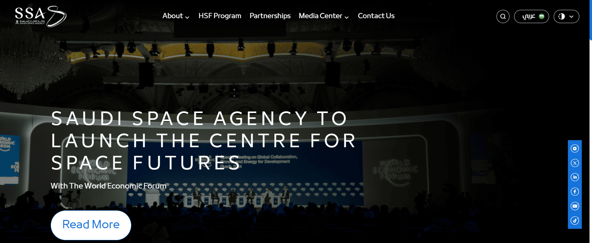
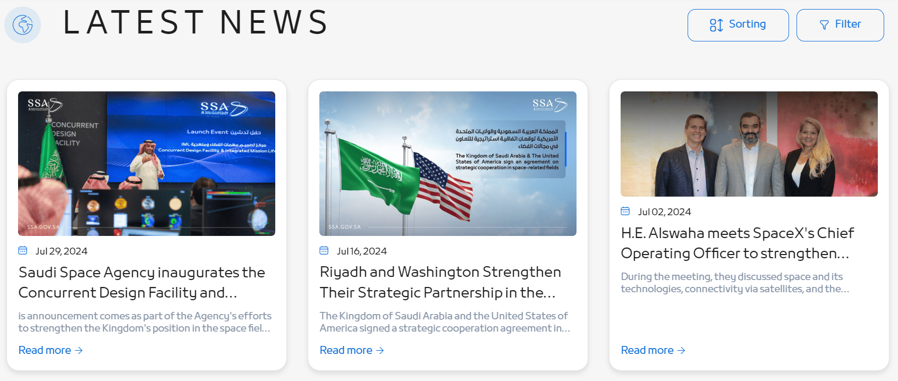
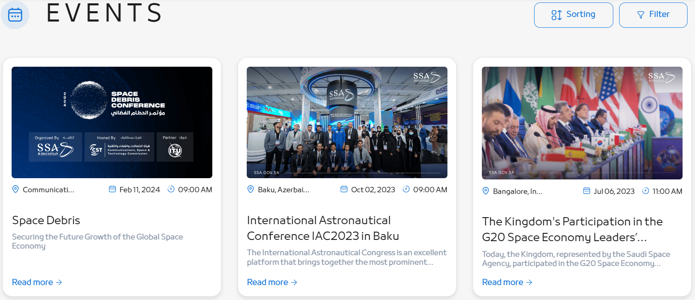

Government · Web Platform
Saudi Space Agency
National portal showcasing Saudi Arabia's space exploration initiatives — revamped to handle complex multi-department stakeholder requirements at enterprise scale.
National portal showcasing Saudi Arabia's space exploration initiatives — revamped to handle complex multi-department stakeholder requirements at enterprise scale.



The Saudi Space Agency's website is a dynamic national portal showcasing the Kingdom's advancements and initiatives in space exploration and technology. The site provides detailed information about the agency's mission, vision, and strategic goals, covering international collaborations, research programs, news updates, and educational resources designed to inspire future generations in space science.
As Software Engineering Specialist, I led the revamp of the SSA website — overseeing both frontend and backend feature development, handling complex multi-department stakeholder requirements, and coordinating across design, content, and backend teams. My work included configuring Umbraco CMS, building custom modules, and integrating real-time data APIs.
Integrating multiple APIs to fetch real-time data on space missions required robust error handling and caching mechanisms to ensure data reliability under load.
High traffic conditions required extensive server-side caching and efficient database query strategies to maintain fast response times.
Coordinating requirements across multiple government departments while maintaining clear communication and timely delivery.